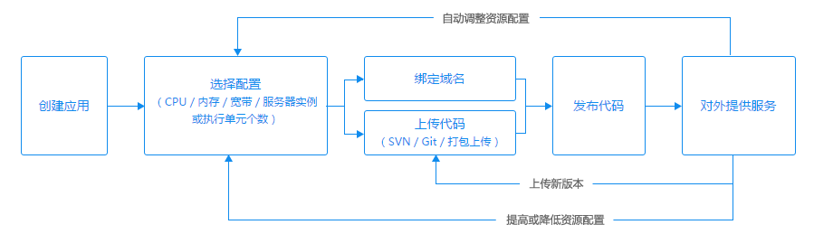
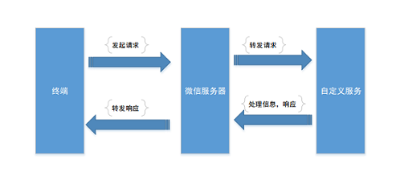
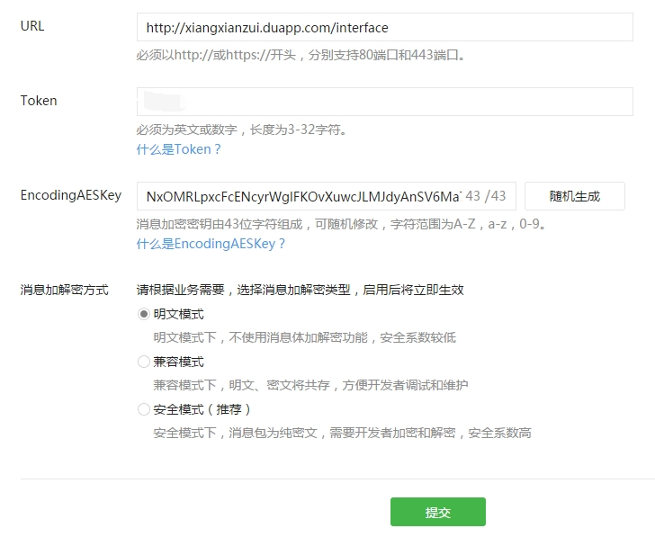

I enjoyed the time with my family quite a lot during Chinese New Year. We made dumplings, set off fireworks, watched Spring Festival Gala, and so on. However, happy time always runs fast. It’s time to finish the holiday and get back to work : )
Now, I have a wechat public account(subscription account), and what I want to achieve is to implement a simple chatting robot with the help of Baidu App Engine.
There are only 3 steps to go.
#1 Create Baidu App Engine
At first, I tried to use Heroku to host the server, but Heroku can’t pass the server url validation while configuring wechat public account. I guess the reason is that the IP of Heroku is in America, so I choose BAE as the server IP would be within mainland.
Creating and managing a BAE app is concluded in this tutorial.

#2 Configure wechat public account
Before configuring wechat public account, it is essential to understand the work flow among user, wechat server, and my own server. This picture demonstrates the work flow very well.

This is to say, wechat server stands between my server and the user. All messages between user and my server should go through wechat server first. Thus, as the server side, we need to tell wechat server the address of my server. This is where the below configuration comes from.

In this picture, URL is the route to send and receive messages in my own server. Token is an identity to tell wechat server that this is me. The encoding key is a key to encrypt and decrypt messages, and it can be generated randomly.
#3 Build server with Node.js
Firstly, wechat server will validate my server via a GET request, which contains 4 parameters:
| Parameter | Description |
|---|---|
| signature | encrypted signature |
| timestamp | current time |
| nonce | random number |
| echostr | random string |
The signature is calculated by wechat server according to timestamp, nonce, and the specified token in last step. What should be done in my server is to calculate the signature again and compare it with the received one. If the two signatures are equal, the server should send the received echostr back to wechat server to tell that validation is success. If wechat server has not received the echostr or the received one is not correct, the valication is failed.
If the validation is success, we can send and receive messages. This part is demonstrated in the official documentation.
Note: The code can be accessed at github.
Written with StackEdit.